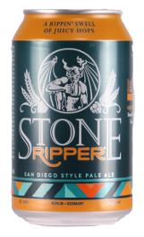

Ripper Pale Ale
Stone Brewing
California, USA
355mL can
5.7% Alc/Vol
When it came to creating Ripper, we drew inspiration from the coastal surf cultures of SoCal and Oz. Sourcing classic Cascade from the Pacific Northwest and Australian Galaxy hops from, yes, Australia, we made a beer both lovers of frothy peaks and hoppy green buds will be stoked about. At the same time, we stayed true to our San Diego roots by pushing the hop boundaries of this style. While some might think it lingers on an edge far closer to an IPA, with all the dry-hop flavour and aroma, it's actually right in line with the current-day interpretation of a West Coast pale. Ours just so happens to have an Aussie accent that's cascading with a juicy amount of grapefruit and passion fruit hoppiness. So veg out or venture out. Either way, rip one open and taste this awesome golden nectar!
Founded by Greg Koch and Steve Wagner, Stone Brewing has come a long way since opening up in San Diego, California in 1996. We have been listed on the Inc. 500 | 5000 Fastest Growing Private Companies list 11 times, and has been called the “All-time Top Brewery on Planet Earth” by BeerAdvocate magazine twice. Stone Brewing is the eighth-largest craft brewer in the U.S. and with our breweries in Richmond, Virginia & Berlin, Germany, we join artisanal brewers across the world in the quest to show the public that there are more, and better, choices beyond the world of industrial beer.
In July 2010, a Baltic Sea shipwreck dated between 1800 to 1830 yielded many bottles of what was thought to be the world's oldest champagne.
Five of the bottles later proved to be the oldest drinkable beer yet found. The brew has already been sampled by four professional beer tasters.
“They said that it did taste very old, which is no surprise, with some burnt notes.”